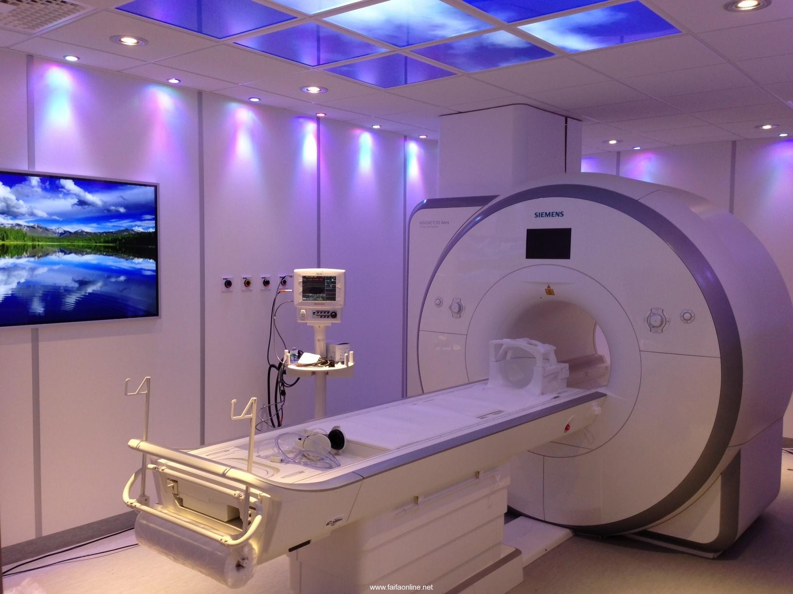

Main the X-ray
An X-ray or radiograph is one of the most commonly used techniques in radiology services for imaging internal structures of the body. X-rays (radiographs) are an accurate and reliable way of getting helpful information to diagnose and treat many diseases, conditions and injuries.
The images show the differences in densities (compact areas) in the body. Bone has a high density so it absorbs more x-rays and shows up as ‘light’ on the images. X-rays pass readily through the air in the lungs so they show up as ‘dark’.
The differences in shading between the densities allows x-rays to outline organs, show abnormalities and find disease locations.
Minimal doses of radiation are used to achieve best results. All x-ray examinations are well within permitted levels of diagnostic radiation.